21/01/2025 — Khó thở cấp ở bệnh nhân lọc máu. K là 6.3 mEq/L. Các dấu hiệu điện tâm đồ là do tăng kali máu, hay thậm chí do nhồi máu cơ tim típ 2?
Bản dịch tiếng Việt của bài "Acute Dyspnea in a Dialysis Patient. K is 6.3 mEq/L. Are ECG findings due to hyperkalemia, or even due to Type 2 MI?" – Dr. Smith’s ECG Blog. Giữ nguyên toàn bộ 16 hình ảnh của bản gốc.
Tôi đang đọc các điện tâm đồ trên hệ thống và thấy tất cả những bản ghi này, của cùng một bệnh nhân. Tôi đọc chúng khi chưa biết bối cảnh lâm sàng và về sau mới xem bối cảnh lâm sàng.
Một bệnh nhân lọc máu ngoài 70 tuổi, có bệnh mạch vành, đã bỏ lỡ một buổi lọc máu rồi đến viện vì khó thở khởi phát cấp. Ông phủ nhận đau ngực.
Trước viện có giảm oxy máu nhẹ, độ bão hòa thấp nhất 90%,
Khi đến viện, huyết áp 140/84, mạch 122, SpO2 (O2sat) 100% và bệnh nhân tăng công hô hấp.
Siêu âm tại giường (POCUS) cho thấy chức năng thất trái rất kém và một ít đường B (B-lines) ở phổi.
Bệnh nhân được thở BiPAP. X-quang ngực không thấy phù phổi.
Điện tâm đồ này được ghi:

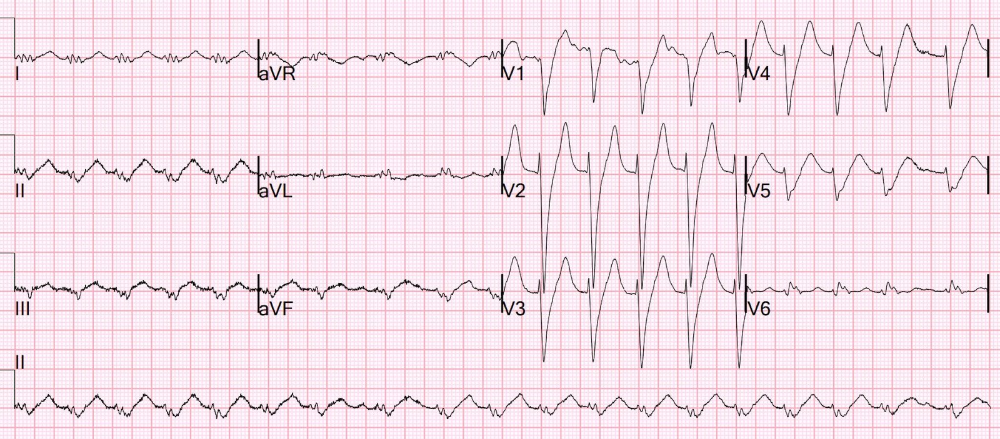
Khó nhận ra sóng P, nhưng tôi tin đây là nhịp nhanh xoang.
Đây là diễn giải của tôi:

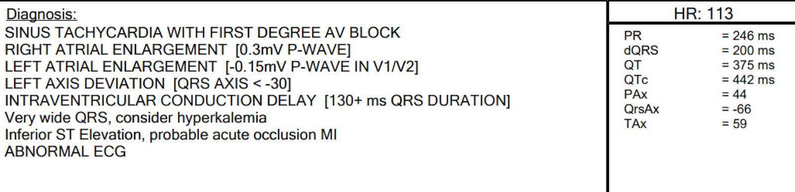
Như bạn thấy, thời gian QRS khá dài, tới 200 ms, và tôi nghĩ đây là phép đo khá chính xác.
Để đo, cần tìm điểm kết thúc của QRS, điều mà tôi đã làm ở đây:

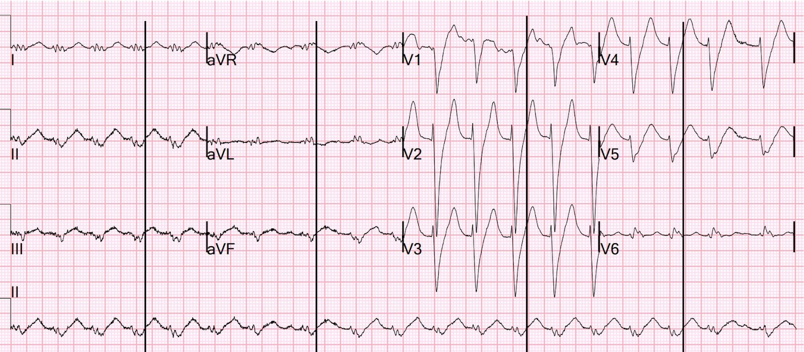
Điểm khởi đầu QRS thì rõ ràng. Và ở đây các đường kẻ cho thấy điểm kết thúc. Như vậy QRS quả thật vào khoảng 200 ms.
Bình luận:
Thời gian QRS bình thường trong LBBB là bao nhiêu?
Trong nghiên cứu này trên các bệnh nhân LBBB liên tiếp nhập viện và có siêu âm tim, thời gian QRS dưới 170 ms (n = 262), so với trên 170 ms (n = 38), liên quan với phân suất tống máu tốt hơn có ý nghĩa (36% so với 24%). Chỉ 13% có thời gian QRS trên 170 ms, và chỉ 1% có thời gian trên 190 ms.
Vì vậy QRS 200 ms trong LBBB quả thật nhiều khả năng là bất thường và do tăng kali máu.
Đây là một ca tương tự liên quan đến blốc nhánh phải.
Ca bệnh tiếp diễn:
Có sẵn một điện tâm đồ trước đó:

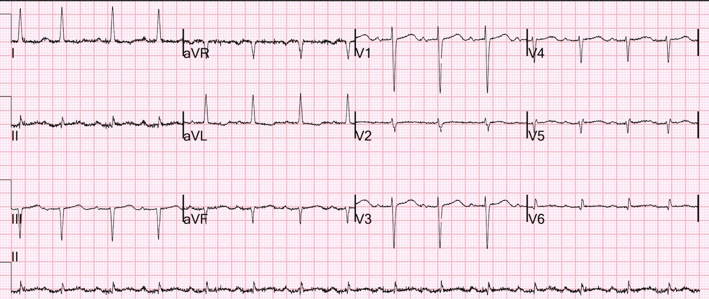
Ở đây thời gian QRS bình thường, vậy trước đó không có LBBB
QRS rất rộng này rất giống LBBB. Vì nó rộng hơn nhiều so với LBBB thông thường, có thêm mối lo về tăng kali máu. Có thể toàn bộ nguyên nhân của QRS rộng là tăng kali máu (hyperK), nhưng không có khả năng cao. Hình thái hoàn toàn không điển hình của tăng kali máu, nhất là các sóng T ở thành dưới.
Tôi đã gửi điện tâm đồ đầu tiên đó cho mô hình AI PM Cardio Queen of Hearts:

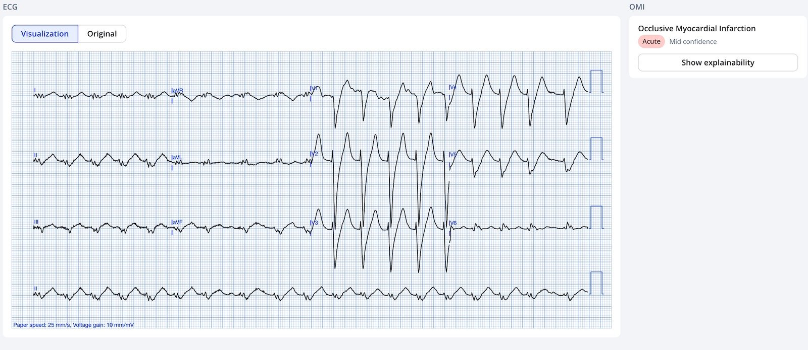
Queen cho rằng đây là OMI
Các bác sĩ điều trị cho rằng điện tâm đồ này biểu hiện tăng kali máu. Họ đã điều trị tăng kali máu.
Kết quả K trả về là 6.3 mEq/L.
Thời điểm 18 phút sau điều trị tăng kali máu

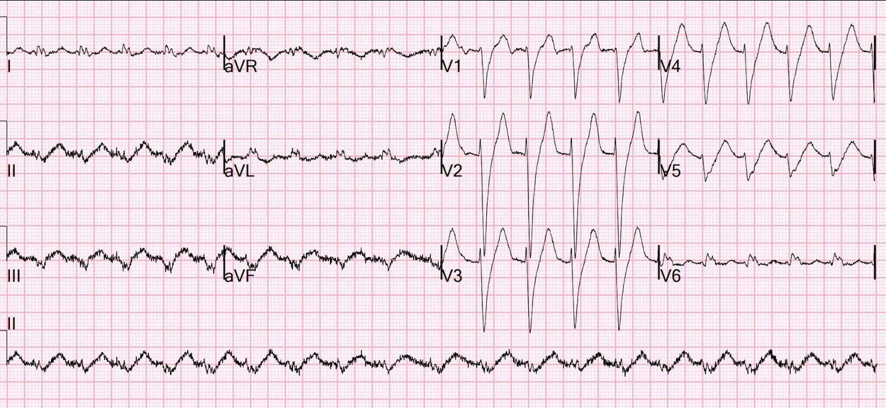
Điện tâm đồ không khác biệt đáng kể.

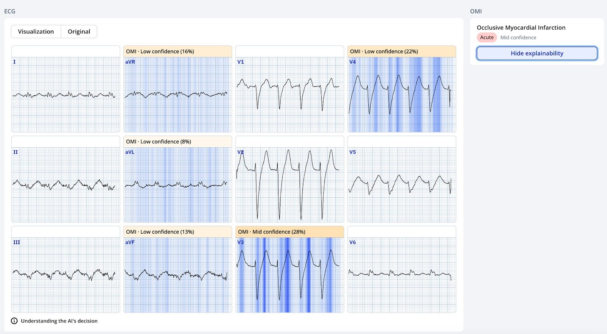
Queen cho rằng bản ghi lại này vẫn là OMI
Thời điểm 33 phút:

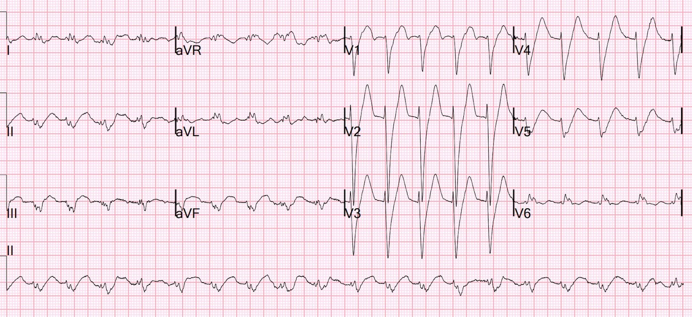
Không thay đổi đáng kể, dù đã điều trị tăng kali máu

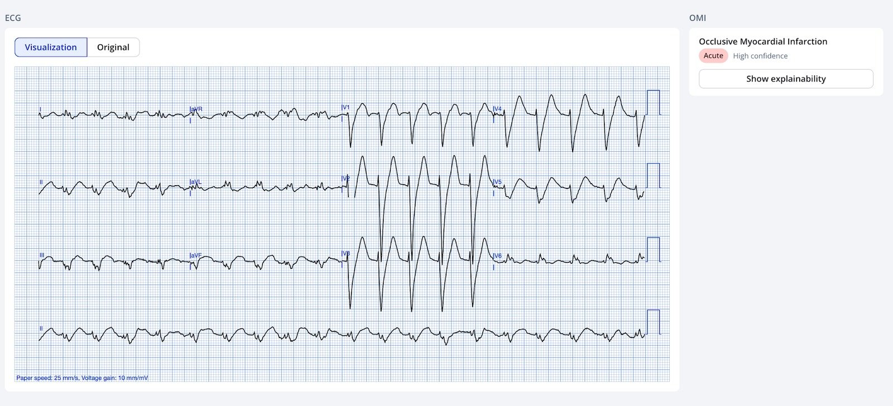
Vẫn là OMI
Thời điểm 56 phút. Lúc này kali đã giảm xuống 5.0 mEq/L.

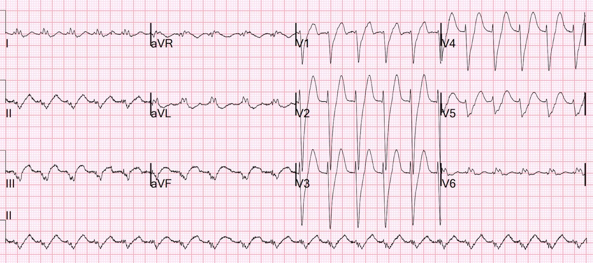
Lúc này có ST chênh lên ngược hướng quá mức xét theo tỷ lệ còn rõ hơn nữa ở các chuyển đạo thành dưới, kèm ST chênh xuống (STD) soi gương quá mức ở aVL/
Đây là điện tâm đồ chẩn đoán không thể nghi ngờ OMI thành dưới trong bối cảnh LBBB

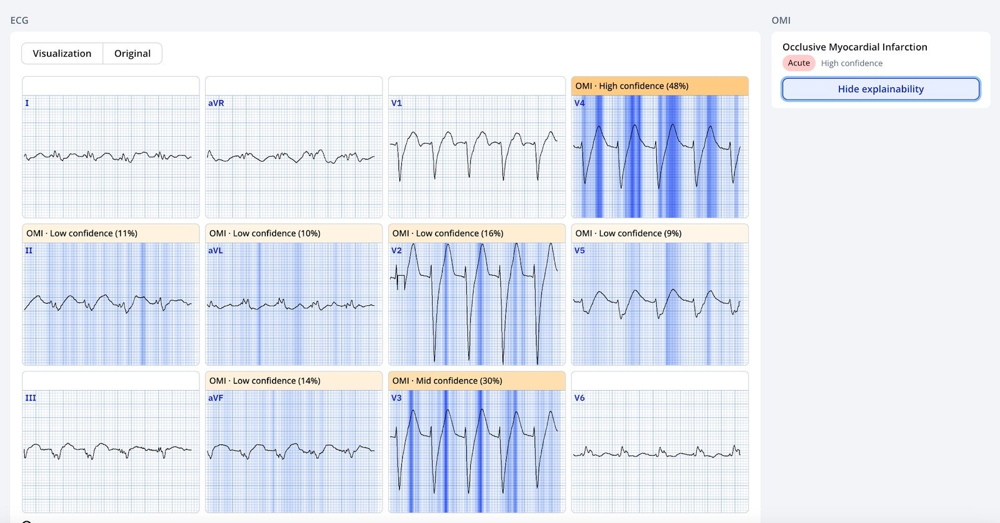
Queen vẫn nói là OMI
Đáng tiếc là không có biện pháp gì được thực hiện cho tình trạng này.
Thời điểm 7 giờ, đảo điện cực

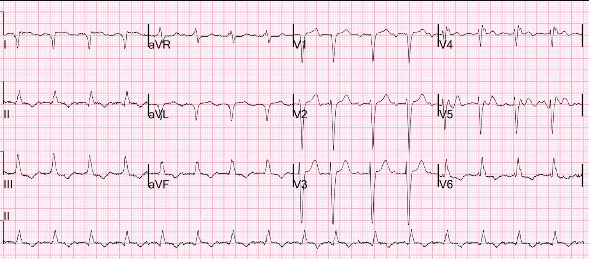
Có đảo điện cực chi (QRS ở I và aVL nay bị đảo ngược), nhưng dù vậy vẫn có thể thấy tình trạng thiếu máu cục bộ dường như đã hết.
Ngày hôm sau, với K = 4.6 mEq/L

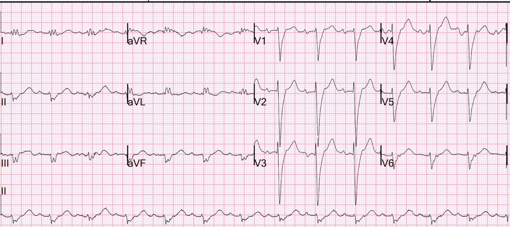
QRS vẫn rất rộng. Bằng chứng OMI đã mất.
Siêu âm tim cũ:
Phân suất tống máu thất trái ước tính 30-35%.
Vô động phần xa vách trước và toàn bộ mỏm.
Siêu âm tim mới:
EF 30-35%.
Rối loạn vận động thành khu trú – thành trước đoạn giữa đến mỏm, đoạn giữa
Vô động trước vách, vách mỏm và thành dưới vùng mỏm.
Vậy có một rối loạn vận động thành dưới nặng mới xuất hiện.
Troponin đạt đỉnh 16,000 ng/L
Chụp mạch vành
Cho thấy “Không có thủ phạm”. Tình trạng này được quy cho “nhồi máu cơ tim típ 2”, tức là nhồi máu cơ tim cấp không do nứt vỡ mảng xơ vữa, mà do “mất cân bằng cung-cầu oxy”.
Tuy nhiên: Mất cân bằng cung-cầu phải có biểu hiện lâm sàng tương ứng:
Tăng nhu cầu: huyết áp hoặc mạch cực kỳ cao, hoặc sức căng thành cơ tim
Giảm cung cấp oxy do: giảm oxy máu, hạ huyết áp, thiếu máu nặng, bệnh lý vận chuyển của hemoglobin (CO, met Hgb, v.v.)
Nhiều khả năng hơn hẳn đây là MINOCA (nhồi máu cơ tim với động mạch vành không tắc nghẽn — Myocardial Infarction with Non-Obstructive Coronary Artery).
Phần lớn MINOCA là do nứt vỡ mảng xơ vữa kèm huyết khối tự tiêu đi và không để lại thủ phạm nhìn thấy được. Phải chẩn đoán bằng IVUS hoặc chụp cắt lớp quang học (Optical Coherence Tomography).
Xem các bài sau:
Dynamic OMI ECG. Negative trops and negative angiogram does not rule out coronary ischemia or ACS. (Điện tâm đồ OMI động. Troponin âm tính và chụp mạch âm tính không loại trừ thiếu máu cục bộ mạch vành hay ACS.)
“The dye don’t lie” …except when it does. Angiogram Negative, or is it? (“Thuốc cản quang không nói dối” …trừ khi nó nói dối. Chụp mạch âm tính, hay không phải vậy?)
Đây nhiều khả năng nhất là huyết khối cấp một động mạch vành dẫn đến OMI:
Các thay đổi điện tâm đồ được quy cho tăng kali máu. Nhưng không thay đổi nào điển hình của tăng kali máu và chúng không cải thiện khi điều trị tăng kali máu.
Ông khó thở khởi phát cấp. Không phải từ từ, như người ta vẫn chờ đợi ở tình trạng quá tải dịch trên bệnh nhân lọc máu. Đúng là ông không đau ngực, nhưng chúng ta phải nhớ rằng có tới 1/3 trường hợp STEMI điển hình rõ rệt không biểu hiện đau ngực.
Điện tâm đồ cho thấy OMI thành dưới. Có tiêu chuẩn Sgarbossa cải biên theo Smith dương tính, là chỉ định vào phòng thông tim (cath lab) theo Trường Môn Tim mạch Hoa Kỳ (American College of Cardiology).
Đến 8 giờ, điện tâm đồ đã trở về hoàn toàn.
Siêu âm tim cho thấy vô động thành dưới vùng mỏm, điều KHÔNG được ghi nhận ở lần siêu âm tim trước.
Họ đưa ra chẩn đoán cuối cùng là nhồi máu cơ tim típ II. Tuy nhiên, bệnh nhân chưa bao giờ giảm oxy máu, nhịp tim chưa bao giờ vượt quá 120, ông không tăng huyết áp hay hạ huyết áp.
Troponin cao nhất đo được là 16,000. Mức này cực kỳ cao đối với nhồi máu cơ tim típ 2 và hoàn toàn phù hợp với STEMI. Hơn nữa, chỉ một phần rất nhỏ nhồi máu cơ tim típ II có hình ảnh tương đương ST chênh lên trên điện tâm đồ. Việc có rối loạn vận động thành mới kèm vô động là điều bất thường.
Bệnh cảnh lâm sàng phù hợp nhất với khó thở như một triệu chứng tương đương đau thắt ngực do hội chứng vành cấp/tắc mạch vành. Điện tâm đồ chẩn đoán OMI.
Nhìn lại thì đây là một nhận định tùy phán đoán, nhưng mặc định rằng không có ACS lúc nhập viện là rất nguy hiểm, nhất là ở một bệnh nhân đã được chẩn đoán bệnh mạch vành (CAD) nặng từ trước và chức năng thất trái kém.
Cuối cùng, bệnh nhân đã may mắn khi động mạch tự mở thông và điện tâm đồ trở về bình thường, nhưng có thể đã phải mất nhiều giờ điều đó mới xảy ra, và troponin 16,000 cho thấy mất một lượng lớn cơ tim.

===================================
BÌNH LUẬN CỦA TÔI, bởi KEN GRAUER, MD (21/1/2025):
===================================
Tôi thấy ca hôm nay của Dr. Smith thật hấp dẫn. Tôi tập trung bình luận vào điện tâm đồ ban đầu — vì nó chứa nhiều dấu hiệu điện tâm đồ tinh tế-nhưng-quan trọng.
- Để điểm lại các đặc điểm bệnh sử của ca hôm nay — Bệnh nhân là nam giới ngoài 70 tuổi có bệnh mạch vành đã biết, đã bỏ lỡ buổi lọc máu gần nhất — và nay đến viện vì khó thở cấp, nhưng không đau ngực.
Nhịp trên điện tâm đồ ban đầu của ca hôm nay:
Thách thức thứ 1 với điện tâm đồ ban đầu hôm nay — là xác định nhịp. Trong Hình 1 — tôi đã đánh dấu điện tâm đồ #1, xác nhận nghi ngờ của Dr. Smith rằng nhịp là nhịp nhanh xoang.
- ĐIỂM THEN CHỐT (PEARL) #1: Khi khó xác định trên điện tâm đồ sự có mặt và bản chất của hoạt động nhĩ — HÃY TÌM một “chỗ ngắt” trong nhịp! Trong Hình 1 — có một “chỗ ngắt” ngắn trong nhịp giữa nhát #7 và #8. Vì khoảng R-R trong “chỗ ngắt” ngắn này hơi dài hơn so với 7 nhát đứng trước — ta có thể thấy rõ một sóng P xoang (mũi tên ĐỎ phía trước nhát #8).
- Bằng chứng ủng hộ đây là sóng P “thật” (chứ không chỉ là nhiễu) — đến từ việc ta thấy một biến dạng sóng P tương tự ở “chỗ ngắt” thứ 2 trong nhịp, xảy ra giữa nhát #18 và #19. Việc khoảng PR trước nhát #19 bằng khoảng PR trước nhát #8 ủng hộ rằng mũi tên ĐỎ thứ 2 trong Hình 1 đánh dấu một sóng P xoang khác.
- Bằng chứng thêm rằng 2 mũi tên ĐỎ này đánh dấu sóng P xoang — đến từ mũi tên HỒNG đánh dấu sóng P xoang thứ 3. Lý do ta có thể thấy sóng P HỒNG bị che khuất một phần này — là khoảng R-R trước nhát #9 cũng dài hơn khoảng R-R đứng trước 15 nhát còn lại trong bản ghi này.
- ĐIỂM THEN CHỐT (PEARL) #2: MẤU CHỐT để rồi xác định xem bản ghi này còn có thêm sóng P nào nữa không — là xác định hình dạng của một sóng T “bình thường” (tức là sóng T không bị biến dạng do một sóng P khác chồng lên) — và sau đó so sánh hình dạng của sóng T “bình thường“ này (ghi nhãn “T” cho sóng T của nhát #7 và #18) — với sóng T của tất cả các nhát khác trong bản ghi này.
- Lưu ý rằng tất cả các sóng T khác trong điện tâm đồ #1 rõ ràng cao hơn và nhọn hơn 2 sóng T “bình thường” (tức là các mũi tên VÀNG phía trên 15 nhát mà ở đó sóng P xoang chồng lên sóng T của mỗi nhát đứng trước).
- ĐIỂM THEN CHỐT (PEARL) #3: Một trong những “manh mối” ưa thích của tôi gợi ý có sóng P xoang bị che khuất một phần trong sóng T đứng trước (điều có thể xảy ra khi nhịp tim nhanh) — là tìm ở chuyển đạo V1 một “vết lõm” nhỏ, âm ngay sau sóng T, nằm trước phức bộ QRS kế tiếp. 2 đường thẳng đứng màu ĐỎ thẳng hàng với 2 sóng P xoang chồng lên sóng T của nhát #13 và #14 (được đánh dấu bằng mũi tên VÀNG) — cho thấy “vết lõm” âm nhỏ ở chuyển đạo V1 xảy ra đồng thời với các sóng P xoang trước nhát #14 và #15 trên dải nhịp DII dài.
ĐIỀU CỐT LÕI: Nhịp trên điện tâm đồ ban đầu hôm nay — là nhịp nhanh xoang , với tần số có thay đổi đôi chút.

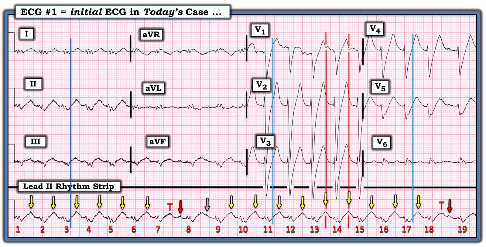
QRS rộng đến mức nào trong Hình 1?
Thoạt nhìn lần 1 — tôi gặp khó khăn khi xác định QRS RỘNG đến mức nào trên điện tâm đồ ban đầu hôm nay. Tôi tin khó khăn của tôi là vì: i) QRS ở các chuyển đạo chi vừa rất nhỏ vừa bị phân mảnh, lại còn bị méo do nhiễu rõ rệt ở các chuyển đạo chi này; và, ii) sóng S ở các chuyển đạo V1 đến V5 cực kỳ dốc — đến mức tôi khó phân biệt giữa một QRS hẹp kèm ST chênh xuống “vây cá mập” (shark fin) với QRS giãn rộng thật sự.
- Điểm MẤU CHỐT: Xác định XEM QRS rộng hay hẹp là thiết yếu để đánh giá chính xác các thay đổi sóng ST-T có thể do thiếu máu cục bộ. Kỹ thuật làm rõ thời gian QRS và điểm kết thúc của phức bộ QRS tương tự kỹ thuật dùng khi đánh giá các biến đổi ST-T dạng “vây cá mập” (Shark Fin) (Để ôn lại khái niệm này — Xem Bình luận của tôi trong bài đăng ngày 3 tháng Năm năm 2024 trên Dr. Smith’s ECG Blog).
- HÃY TÌM một chuyển đạo trong đó bạn xác định rõ được điểm khởi đầu và điểm kết thúc của phức bộ QRS. Trong Hình 1 — tôi chọn chuyển đạo I, vì gần như không có nhiễu ở chuyển đạo này. Đường thẳng đứng màu XANH đậm đánh dấu điểm kết thúc phức bộ QRS — và cho ta thấy QRS kết thúc ở đâu đối với từng nhát trên dải nhịp DII dài.
- Sau đó tôi kẻ các đường thẳng đứng màu XANH nhạt hướng lên từ điểm kết thúc QRS này trên dải nhịp DII dài, cho QRS của nhát #11 và nhát #17. Làm như vậy xác nhận rằng QRS quả thật rộng — và làm như vậy cho ta biết chính xác đoạn ST bắt đầu ở đâu trong từng chuyển đạo trước tim.
Loại rối loạn dẫn truyền nào có trong Hình 1?
Biết rằng cơ chế nhịp trong Hình 1 là nhịp xoang với phức bộ QRS (ít nhất 0.18 giây) giãn rộng rõ rệt — loại rối loạn dẫn truyền này giống nhất với LBBB (blốc nhánh trái — Left Bundle Branch Block), dù có một số đặc điểm không điển hình.
- LBBB được gợi ý bởi phức bộ QRS dương ưu thế ở các chuyển đạo bên trái (tức là ở các chuyển đạo I, aVL, V6) — và các phức bộ QRS âm ưu thế ở các chuyển đạo V1 đến V5, nhất là với sườn xuống dốc của sóng S.
- Các đặc điểm không điển hình đối với LBBB là sự phân mảnh rõ rệt ở các chuyển đạo chi — và sóng Q giả mà ta thấy trong QRS phân mảnh ở chuyển đạo V6. Những đặc điểm này nhiều khả năng nhất là hậu quả của bệnh mạch vành nền đáng kể.
- LƯU Ý: Theo Dr. Smith — Ngoài QRS giãn rộng, hình ảnh của điện tâm đồ ban đầu hôm nay không điển hình cho tăng kali máu, vì sóng T nhọn chỉ giới hạn ở 4 chuyển đạo trước tim đầu tiên, và đáy của các sóng T này không hề hẹp như thường thấy trong tăng kali máu.
===================================
Bệnh nhân hôm nay có bị STEMI không?
Theo Dr. Smith — đỉnh troponin 16,000 gợi ý STEMI nhiều hơn hẳn so với nhồi máu cơ tim típ II.
- Theo Dr. Smith — việc không có CP (đau ngực — Chest Pain) không loại trừ STEMI. Như tôi nhấn mạnh trong Bình luận của tôi ở bài đăng ngày 6 tháng Mười Hai năm 2022 — các nghiên cứu Framingham từ lâu đã cho ta biết rằng có tới ~30% tổng số nhồi máu cơ tim có thể xảy ra mà không có than phiền đau ngực! Thay vào đó — nhiều bệnh nhân trong số này có một triệu chứng “tương đương” khác không phải đau ngực.
- Triệu chứng “tương đương” không phải đau ngực hay gặp nhất — là khó thở mới xuất hiện, chính xác là điều bệnh nhân hôm nay gặp phải.
Để rõ ràng, trong Hình 2 — tôi đã đánh dấu trên điện tâm đồ ban đầu hôm nay những dấu hiệu “lọt vào mắt tôi” vì rõ ràng bất thường khi đi kèm LBBB.
- “Mắt” tôi ngay lập tức bị thu hút bởi sóng ST-T ở 3 chuyển đạo thành dưới (trong các hình chữ nhật ĐỎ). Ghi nhớ rằng đường thẳng đứng màu XANH đậm đánh dấu điểm kết thúc phức bộ QRS — tôi cho rằng sóng ST-T là tối cấp ở các chuyển đạo II, III và aVF (các mũi tên ĐỎ cho thấy ST chênh lên ở điểm J tinh tế-nhưng-có ý nghĩa khi xét đến kích thước rất nhỏ của QRS — và đoạn ST thẳng đuỗn bất thường rõ).
- Bằng chứng ủng hộ rằng các thay đổi ở chuyển đạo thành dưới này là thật — đến từ đoạn ST thẳng đuỗn và chênh xuống bất thường ở chuyển đạo aVL (trong hình chữ nhật màu XANH nhạt).
- Đoạn ST thẳng đuỗn bất thường tương tự kèm chênh xuống nhẹ cũng thấy ở chuyển đạo trước tim bên V6.
- NHẬN ĐỊNH CỦA TÔI: Xét bệnh cảnh lâm sàng hôm nay — sự khác biệt rõ rệt của điện tâm đồ ban đầu hôm nay so với điện tâm đồ trước đó (trình bày ở trên trong phần bàn luận của Dr. Smith) — và việc không có bất kỳ thay đổi nào ở hình ảnh sóng ST-T tối cấp ở các chuyển đạo thành dưới 18 phút sau khi điều trị khả năng tăng kali máu (hyper-K+) — tôi nghiêng về chẩn đoán OMI cấp cho đến khi chứng minh được điều ngược lại.

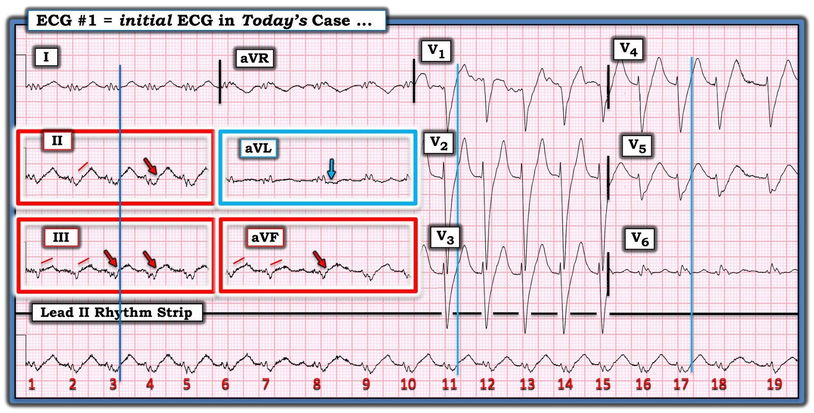